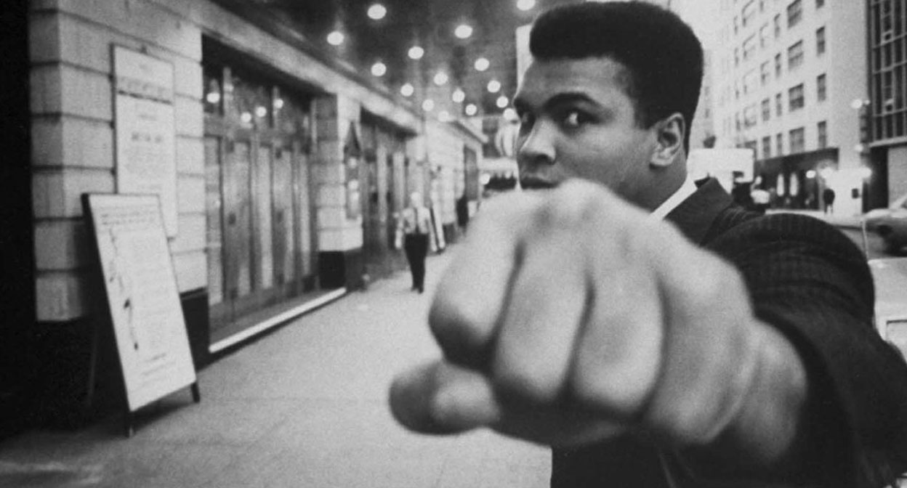

Impossible is just a big word thrown around by small men who find it easier to live in the world they’ve been given than to explore the power they have to change it. Impossible is not a fact. It’s an opinion. Impossible is not a declaration. It’s a dare. Impossible is potential. Impossible is temporary. Impossible is nothing.
Mohammed Ali -